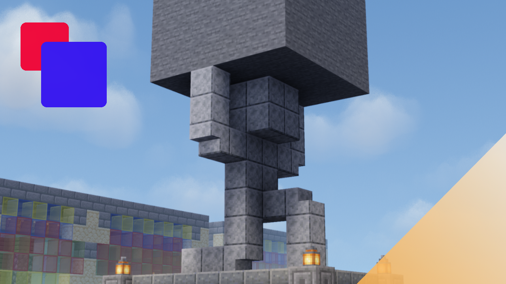
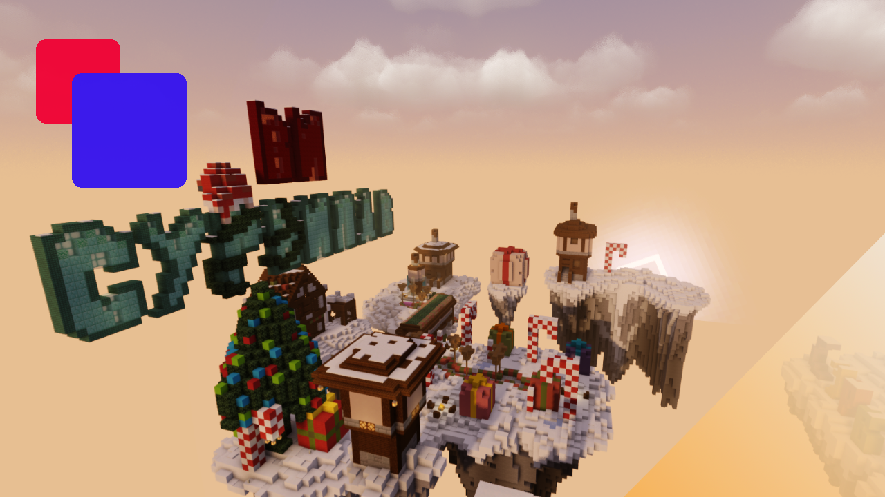
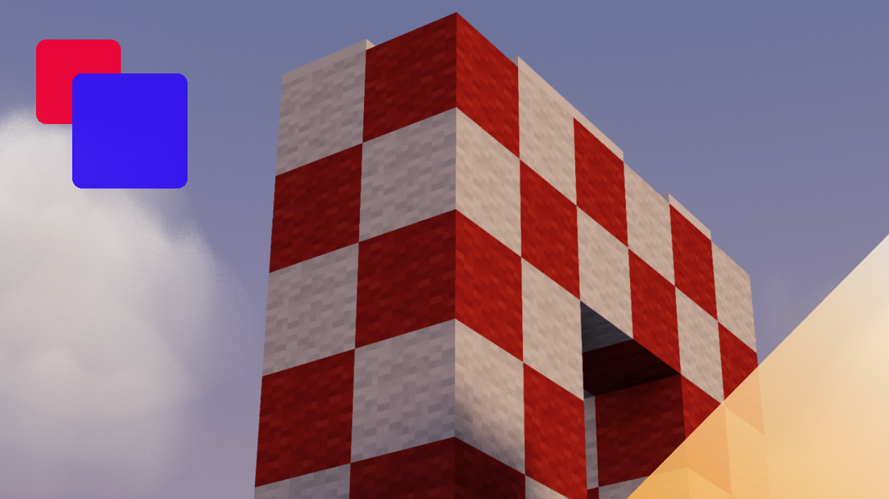
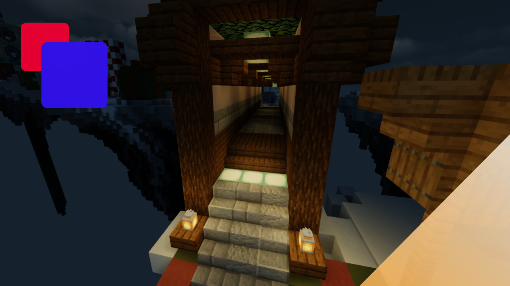
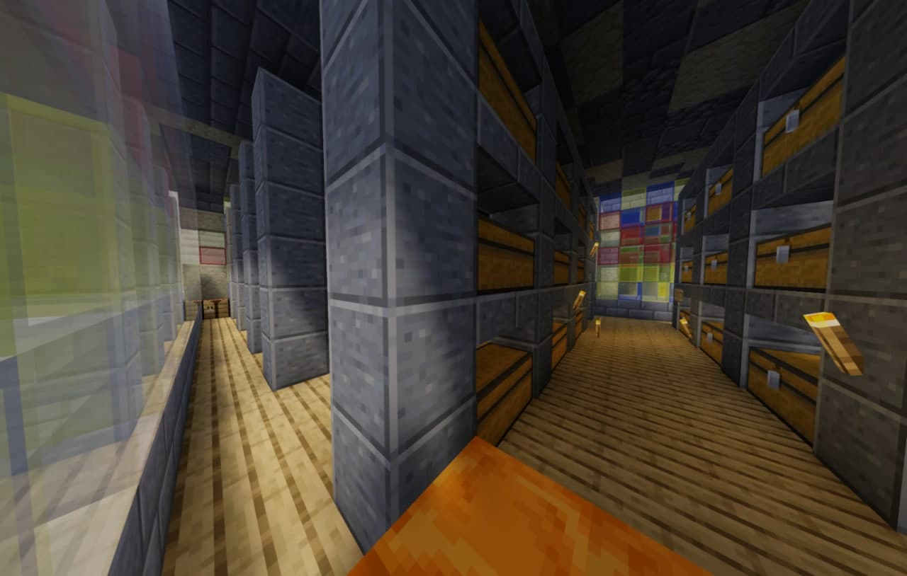
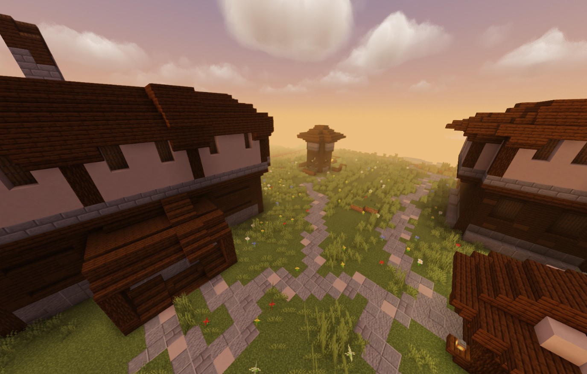
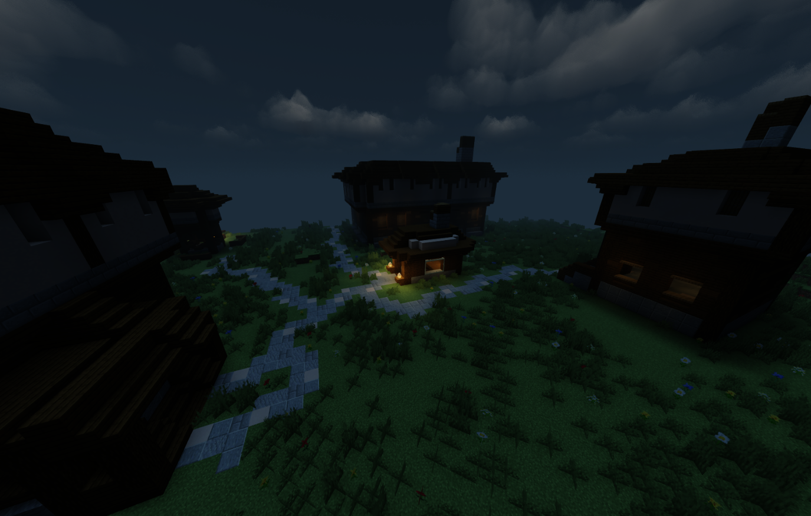

Основная информация по серверу
- Айпи-адрес: Survivilav.aternos.me
- Название: SURVIVILAV
- Краткое описание: Сервер с душевной администрацией, есть проблемы? - готовы помочь!
- Порт: 39837
Основная информация по серверу
Скриншоты сервера




ССЫЛКИ НА НАС
Сервер:
Тех. админ:
Администрация проекта
GiverYT - Создатель сервера. Так же его Владелец, имеет очень слабую связь со своим проектом.
RakZarYT - Главный администратор. Отвечаю за всю техническую часть проекта. Занимался строительством спавна, созданием этого сайта, с полного нуля. А также всегда готов, помочь вам. В ближайшее время хочу, настроить привилегии получше, и создать telegram-бота. Один из самых активных игроков.
Почему сервер не онлайн?
Наш сервер работает, только благодаря (бесплатному) хостингу. Из-за этого есть некоторые ограничения. Которые мы пытаемся обойти, и получается всё успешнее.
Как включить сервер?

Существует несколько способов. Например:
1) Воспользуйтесь телеграмм-чатом, или другими соц. сетями, напишите нам. Мы всегда включаем сервер, по просьбе. Но, ваше сообщение, мы можем не заметить.
2) Используйте личный доступ. Список действий:
Действия которые надо выполнить (один раз):
Действия которые надо выполнять, каждый раз:
3) Используйте публичный доступ. Список действий:
Как войти на сервер?

Как войти с телефона?
